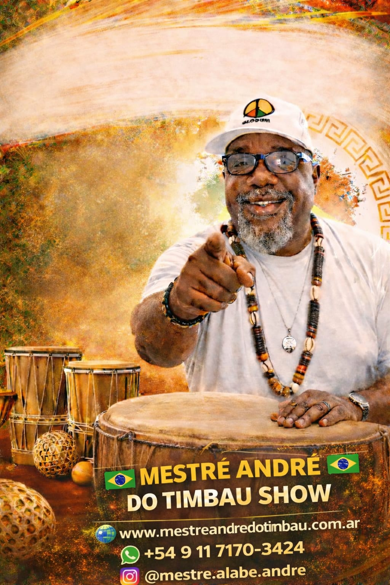

Orígenes y Trayectoria
Andre Silva Machado nace en el seno de la percusión afro-brasileira el 11 de agosto de 1974 en Bahia (Brasil), en pleno desarrollo de una generación de ritmos y estilos afros, heredando desde un principio el idioma y el ritmo de los tambores africanos en su corazón, que late al ritmo del batuque, umbanda y candomblé.
Entre los años 1975 y 1986, surgen los primeros blocos afros percussivos, hoy conocidos en el mundo entero como ser: Ilê Aiyê, Olodum, Filhos de Gandhy, Timbalada, etc., desde los barrios más humildes de Salvador, Bahia, demostrando también la raíz africana.
Desde el despertar de su conciencia, Andre Silva participa en varias clases de percusión afro (tambores) en el centro cultural llamado Casa do Olodum, en el Pelourinho.
Con 10 años viaja Porto Alegre (RS) por motivos familiares, donde conoce el babalorixá Luis Roberto do Couto Stemburgo, conocido como Pai Ydi d’Oxum Pandi, haciendo junto a él sus primeros inicios en el mundo del batuque no Rio Grande do Sul, ya que sus primeras iniciaciones fueron hechas en el Candomblé Nación en el año 1988. Hace su primer obligación y consagración religiosa en los tambores afros.
Al año siguiente, 1989, conoce su primer maestro de Ilú (tambor) Afro, Jorge Carvalho, más conocido como Jorge “Testa” de Ogum, fue quien enseñó los primeros pasos y toques, como: conocer el mundo del Ylú (tambor) Afro, conducir una obligación, los axés, fundamentos y rituales.
Día 15 de octubre de 1989 debuta al lado de Jorge “Testa” como alabé donde tocó su primer batuque en la casa de Mãe Eufrazia de Oxum (Q.E.R.D), pasando los tiempos adquiriendo experiencia como alabé.
En 1990 tuvo su primera oportunidad fuera de la ciudad de Porto Alegre para tocar su primero contrato y batuque en la ciudad de Uruguaiana, en la casa de Pierre Duran, conocido como Pai Pierre de Oxum, donde tocó case cinco años en su ylé.
En 1993 conoce su segundo amigo, compañero, ejemplo, Jorge Luis Vas (Mestre Chamin d’Agandjú), quien terminó de enseñar lo que hoy sabe, transmite André de Sangòjoba tocando y rezando para los orishas, también cantando.
Introducción a la Percusión Afro
En estos 30 años de carrera he tenido la oportunidad y el honor de ser testigo y participar con mi Ilú en muchas obligaciones, aprontamientos, entregas de axés, inauguración de ylés y terreiros.
En la actualidad el ritmo africano, nuestra religión afro-brasileira, se ha extendido a todos los rincones del mundo, conquistando los corazones de diversos tipos de públicos, con su incomparable fé, devoción, propia de nuestra herencia africana en el batuque y candomblé.
Por mi parte, luego de recorrer varios países hermanos con nuestra música africana y de intercambiar experiencias con diversos músicos, alabés y ogans, he notado gran falta de información; como consecuencia, la deformación y aceleración de los ritmos y estilos originales de los toques.
El principal objetivo de este método es presentar y extender de una forma clara y ordenada desde la raíz del batuque afro, y también brindarles información básica acerca de los diferentes orixás del panteón yorubá, para una mejor interpretación de su vibración y por donde de su música, que lo disfruten y posa aprender algo de mi experiencia como Mestre Alabe Andrê s Sàngòjoba Odumbadeyi.
Los Orishas: Esencia y Fundamentos
Una de las diferencias más marcadas que existen entre los Órisas y los santos católicos es que los santos católicos son espíritus de muertos ("egunes"), mientras que los Órisàs son seres superiores, creados por Dios mucho antes de la creación de los seres humanos. Son seres de luz e intermediarios entre:
- I – Dios (Olodumare) y los seres humanos.
- II – Los seres humanos y los espíritus malignos.
- III – Los seres humanos, los Àjogún (espíritus ejecutores).
- IV – Los seres muertos, su destino.
El Orisàs que representan a Dios em la Tierra es Orisa-Nlá, y es el líder espiritual de todos los demás orisas ademas, es el òrisa de la sabedoria y de la adivinacion.
Osà-nlá
(Hijo) Todos los demás Òrisas se ubican por debajo de Oşa-nlá.
Esu
Dinamismo y movimiento. Guardián del Àse de Dios.
Agradecimientos
"En primer lugar agradezco al señor de la vida y a los grandes Orishás (Angeles Guías) por haberme dado la oportunidad de formar parte de su infinita perfección y por haberme dado el don de la música afro y los Ilús (tambores).
A mis padres y hermanos sanguíneos y espirituales por acompañarme a caminar el buen camino.
A mis amigos de Buenos Aires, Argentina, alabês, tamboreiros, ogañs, por el cariño y aprecio.
A todos los ylés, terreiros, templos donde llevé mi axé y mi toque durante esos años que viví en Argentina.
También a mis alumnos, por el cariño, por acompañarme en mi trayectoria.
Agradezco a mi hija, heredera de mis conocimientos religiosos, Candela Guadalupe, por darme fuerzas para continuar cuando muchas veces pensé en abandonar ese camino religioso."
"El enemigo no estaría atacándote si vos no tendrías algo de mucho valor.
Ladrones no tentan robar casas vacías.
Nadie patea un perro que ya está muerto."
Un buen Axé Odara. Kolofé Olonum.